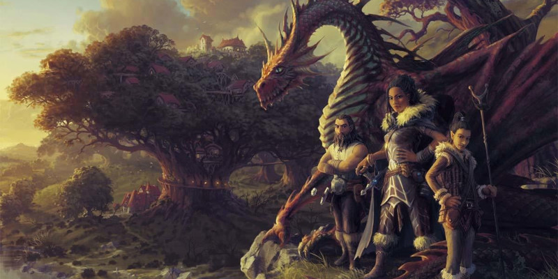

Héros de Krynn
Ce document présente une nouvelle race, une nouvelle sous-classe et deux nouveaux historiques.
- Kender (race)
- Magie lunaire (sous-classe pour ensorceleur)
- Chevalier de Solamnie (historique)
- Mage de la Haute sorcellerie (historique)
Avec également de nouveaux dons.
Créer votre personnage
Lorsque vous créez votre personnage, vous décidez s'il appartient à la race humaine ou à l'une des races fantastiques du jeu, comme celle présentée ci-dessous. Si vous créez un personnage en utilisant une option de race présentée ici, suivez ces règles supplémentaires lors de la création du personnage.
Augmentation de caractéristiques
Lorsque vous déterminez vos valeurs de caractéristiques, augmentez une de ces valeurs de 2 et augmentez-en une autre de 1, ou augmentez trois valeurs de 1. Suivez cette règle quelle que soit la méthode que vous utilisez pour déterminer les caractéristiques (lancers de dés ou achat par points). La section Création rapide de la classe de votre personnage propose des suggestions pour les valeurs à augmenter. Vous êtes libre de suivre ces suggestions ou de les ignorer. Quelles que soient les valeurs que vous décidez d'augmenter, aucune ne peut l'être au-dessus de 20.
Langues
Votre personnage peut parler, lire et écrire le commun et une autre langue que vous et votre MD reconnaissez comme appropriée pour le personnage. Le Manuel des Joueurs propose une liste de langues répandues parmi lesquelles choisir. Le MD est libre d'ajouter ou de supprimer des langues de cette liste pour une campagne particulière.
Type de créature
Chaque créature de D&D, y compris chaque personnage joueur, a une entrée spéciale dans les règles qui identifie son type de créature. La plupart des personnages joueurs sont de type humanoïde. Les options présentées ici indiquent de quel type de créature est votre personnage.
Voici une liste des types de créatures du jeu par ordre alphabétique : aberration, artificiel, bête, céleste, dragon, élémentaire, fée, fiélon, géant, humanoïde, monstruosité, mort-vivant, plante, vase. Ces types n'ont pas de règles spécifiques liées, mais certaines règles du jeu affectent les créatures de certains types de différentes manières. Par exemple, la description du sort soins spécifie que le sort ne fonctionne pas sur une créature de type artificiel.
Longévité
L'espérance de vie typique d'un personnage joueur dans le multivers de D&D est d'environ un siècle, en supposant que le personnage ne rencontre pas avant cela une fin violente lors d'une aventure. Certaines races, comme les nains et les elfes, peuvent vivre des siècles, un fait noté dans la description de la race.
Taille et poids
Les personnages joueurs, quelle que soit leur race, ont généralement plus ou moins la même taille et le même poids que les humains dans notre monde. Si vous souhaitez déterminer la taille ou le poids de votre personnage au hasard, consultez le tableau dans le Manuel des Joueurs et choisissez la ligne qui représente le mieux le gabarit que vous imaginez pour votre personnage.
Kender
Originaire du monde de Krynn, les kenders sont des humanoïdes de petite taille qui ressemblent aux humains. Ils ont des oreilles pointues et ils présentent diverses apparences. Les kenders sont dotés d'une curiosité surnaturelle qui les poussent vers l'aventure, qu'elle soit petite ou grande. Cette curiosité est supposément liée à la magie fantasque de la Féerie, pour laquelle les kenders auraient une forte affinité, selon certains. Mus par leur curiosité, nombreux sont les kenders qui se sont retrouvés de l'autre côté d'un portail qui les a mené sur un autre plan ou dans un autre monde.
Inconnu des autres mortels, un phénomène magique enveloppe un kender. Stimulés par leur curiosité et leur affection pour les babioles, les souvenirs et autres bric-à-brac, les pochettes d'un kender seront remplis, par magie, de ce type d'objets. Personne ne sait d'où proviennent ces objets, pas même le kender. Ainsi, plusieurs kenders ont été qualifiés à tort de voleur alors qu'ils pigent plutôt ces objets dans leurs propres poches.
Trait
Un kender possède les traits raciaux suivants.
Type de créature. Vous êtes un humanoïde
Taille. Votre taille est Petite (P).
Vitesse. Votre vitesse de base est de 9 mètres.
Brave. Vous avez un avantage aux jets de sauvegarde pour éviter la condition effrayé ou y mettre fin si elle vous affecte.
As du kender. À partir du niveau 3, vous possédez une capacité magique qui vous permet de prendre un objet dans un sac ou tout autre contenant. Au prix d'une action bonus, vous mettez la main dans un contenant que vous portez et y récupérez un objet déterminé au hasard selon la table ci-dessous. L'objet luit légèrement et il disparaît au bout d'une heure. Vous pouvez utiliser cette action bonus un nombre de fois égal à votre bonus de maîtrise et récupérez toutes les utilisations dépensées lorsque vous terminez un repos long.
| d6 | Objet |
| 1 | 5d6 pièces d'or |
| 2 | 1 arme courante de votre choix qui a la propriété légère. |
| 3 | 1 objet de votre choix tiré du tableau de l'Équipement d'aventurier détaillé dans le Manuel des Joueurs. L'objet ne peut valoir plus de 1 po et peser plus de 500 g. |
| 4 | 1 objet tiré aléatoirement du tableau des Babioles détaillé dans le Manuel des Joueurs. |
| 5 | Un pied de biche ou un grappin, selon votre choix. |
| 6 | 1 objet de votre choix tiré du tableau des Outils détaillé dans le Manuel des Joueurs. L'objet ne peut valoir plus de 10 po. |
Railleur. Vous avez une prédisposition naturelle à détecter les sensibilités d'une créature et à improviser une raillerie qui pourrait troubler cette créature. Au prix d'une action bonus, vous faites pleuvoir les insultes sur une créature à 18 mètres ou moins de vous, qui peut vous entendre et vous comprendre. La cible doit réussir un jet de sauvegarde de Sagesse (DD 8 + votre bonus de maîtrise + votre modificateur de Charisme) sans quoi elle a un désavantage à tous ses jets d'attaques faits avant le début de votre prochain tour. Vous pouvez utiliser cette action bonus un nombre de fois égal à votre bonus de maîtrise et récupérez toutes les utilisations dépensées lorsque vous terminez un repos long.
Magie lunaire
Au niveau 1, un ensorceleur gagne la capacité Origine magique. Voici une nouvelle option d'origine.
Dans de nombreux mondes, la lune est un corps céleste aux propriétés magiques qui suscite la vénération. Sur Krynn, les dieux de la magie sont associés aux trois lunes de ce monde. Sur le monde de Toril, la déesse Selûne emploie la lumière de la lune pour combattre les ténèbres. Sur Eberron, les académiciens de la Prophétie draconique déchiffrent les secrets anciens cachés dans les croissances et décroissances des douze lunes de ce monde.
Vous, ou quelqu'un de votre lignée, avez été exposé à la magie concentrée de la ou des lunes de votre monde, et avez été imprégné de la magie lunaire. Peut-être que votre aïeul a été impliqué dans un rituel druidique lors d'une éclipse, ou qu'un fragment mystique de lune s'est écrasé non loin de vous. Peu importe comment cette magie vous a trouvé, votre lien avec la lune est flagrant au moment de lancer vos sorts d'ensorceleur. Consultez le tableau ci-dessous et choisissez comment votre lien avec la lune se manifeste au moment de lancer vos sorts d'ensorceleur. Vous pouvez également laisser le dé en décider.
| d4 | Manifestation |
| 1 | Vous émettez une faible lumière qui prend la couleur d'une lune de votre monde. |
| 2 | Vos pupilles changent de forme pour répliquer la phase courante d'une lune de votre monde. |
| 3 | Des manifestations spectrales de la ou des lunes de votre monde gravitent autour de vous. |
| 4 | Le contour de votre ombre émet une faible lumière, à la manière d'un corps lunaire lors d'une éclipse solaire. |
Feu lunaire
Capacité de magie lunaire de niveau 1
Vous pouvez commander la lumière radiante de la lune. Vous apprenez le sort flamme sacrée, qui ne compte pas dans le nombre de sorts mineurs d'ensorceleur que vous connaissez. Lorsque vous lancez le sort, vous pouvez cibler une seule créature, comme prévu, ou cibler deux créatures qui sont dans la portée du sort et à 1,50 mètre ou moins l'une de l'autre.
Incarnation lunaire
Capacité de magie lunaire de niveau 1
Vous apprenez des sorts additionnels lorsque vous atteignez certains niveaux dans cette classe, comme indiqué dans le tableau ci-dessous. Chacun de ces sorts compte comme un sort d'ensorceleur pour vous, mais ils ne comptent pas dans le nombre de sorts d'ensorceleurs que vous connaissez.
| Niveau d'ensorceleur |
Sort de pleine lune |
Sorts de nouvelle lune |
Sorts de lune croissante |
| 1 | Lueurs féerique | Murmures dissonants | Sanctuaire |
| 3 | Rayon de lune | Ténèbres | Cécité/Surdité |
| 5 | Protection contre la mort | Malédiction | Monture fantôme |
| 7 | Liberté de mouvement | Tentacules noirs d'Evard | Terrain hallucinatoire |
| 9 | Soins de groupe | Double illusoire | Songe |
Chaque fois que vous terminez un repos long, vous pouvez choisir la phase lunaire qui manifeste son pouvoir à travers votre magie : la Pleine lune, la Nouvelle lune ou la Lune croissante. Tant que vous êtes dans la phase choisie, les sorts associés à cette phase peuvent être lancés une fois sans dépenser d'emplacement de sort. Une fois que vous avez lancé un sort de cette manière, vous ne pouvez le refaire avant d'avoir terminé un repos long.
Bénédictions lunaires
Capacité de magie lunaire de niveau 6
Les phases de la lune influencent votre métamagie. Chaque phase lunaire est associée aux sorts des écoles de magie suivantes :
Pleine lune. Sorts d'abjuration et d'invocation
Nouvelle lune. Sorts d'évocation et de nécromancie
Lune croissante. Sorts de divination et de transmutation
Chaque fois que vous utilisez une Métamagie sur un sort du tableau d'Incarnation lunaire ou sur un sort de l'école de magie associée à la phase lunaire dans laquelle vous vous trouvez, vous pouvez réduire le nombre de points de sorcellerie dépensés de 1 (minimum 0). Vous pouvez réduire les points de sorcellerie dépensés pour votre Métamagie un nombre de fois équivalent à votre bonus de maîtrise. Vous en regagnez toutes les utilisations après avoir terminé un repos long.
Croissance et décroissance
Capacité de magie lunaire de niveau 6
Vous affinez votre maîtrise des phases de votre magie lunaire. Au prix d'une action bonus, vous pouvez dépenser 1 point de sorcellerie pour changer votre phase lunaire.
Amélioration lunaire
Capacité de magie lunaire de niveau 14
La puissance d'une phase lunaire sature votre être. Chaque fois que vous choisissez une phase lunaire dans le but de bonifier votre magie, vous obtenez également les bénéfices suivants, selon la phase :
Pleine lune. Vous émettez une lumière vive sur un rayon de 3 mètres et une lumière faible sur 3 mètres supplémentaires. De plus, vous et les créatures de votre choix avez un avantage à vos jets de sauvegarde tant que vous êtes dans la lumière vive que vous émettez.
Nouvelle lune. Vous avez un avantage à vos jets de Dextérité (Discrétion). De plus, tant que vous êtes dans une lumière faible ou dans les ténèbres, les jets d'attaques contre vous ont un désavantage.
Lune croissante. Vous avez la résistance aux dégâts nécrotiques et aux dégâts radiants.
Phénomène lunaire
Capacité de magie lunaire de niveau 18
Votre magie de phase lunaire déferle. Au prix d'une action bonus, vous pouvez puiser dans un pouvoir spécial associé à la phase lunaire dans laquelle vous vous trouvez. Sinon, durant l'action bonus prise pour changer votre phase lunaire par l'intermédiaire de la capacité Croissance et décroissance, vous pouvez utiliser immédiatement le pouvoir de la phase lunaire à laquelle vous vous associez.
Pleine lune. Vous irradiez momentanément une intense lumière lunaire. Toute créature de votre choix qui se trouve à 9 mètres ou moins de vous doit réussir un jet de sauvegarde de Constitution contre votre DD de sauvegarde des sorts ou être aveuglée jusqu'à la fin de son prochain tour. De plus, une créature de votre choix dans cette zone gagne 3d8 points de vie.
Nouvelle lune. De vous émane momentanément une oppressante noirceur. Toute créature de votre choix qui se trouve à 9 mètres ou moins de vous doit réussir un jet de sauvegarde de Dextérité contre votre DD de sauvegarde des sorts ou subir 3d10 dégâts nécrotiques et sa vitesse est réduite à 0 jusqu'à la fin de son prochain tour. De plus, vous devenez invisible jusqu'à la fin de votre prochain tour, à moins d'attaquer ou de lancer un sort.
Lune croissante. Vous vous faufilez entre l'ombre et la lumière. Vous pouvez vous téléporter par magie dans un espace inoccupé que vous pouvez voir à 18 mètres ou moins de vous. De plus, vous obtenez la résistance à tous les types de dégâts jusqu'au début de votre prochain tour.
Une fois que vous avez utilisez une action bonus de phase, vous ne pouvez le refaire avant d'avoir terminé un repos long ou dépenser 5 points de sorcellerie pour en faire à nouveau usage .
Chevalier de Solamnie
Votre entraînement a fait de vous un guerrier valeureux reconnu comme un Chevalier de Solamnie. Chacune de vos actions est guidée par des règles strictes. Vous faites tous les efforts pour les appliquer en aspirant à défendre les plus faibles et à contrer toutes les formes du mal. Votre honneur est tout aussi important que votre propre vie.
Compétences maîtrisées : Athlétisme, Survie
Outils maîtrisés : un type d'instrument de musique
Langues : une de votre choix.
Équipement : un insigne de rang, un jeu de cartes, un ensemble de vêtements communs et une bourse contenant 10 po
Capacité : Écuyer de Solamnie
Vous obtenez le don Écuyer de Solamnie (voir ci-dessous). De plus, les Chevaliers de Solamnie vous procurent gratuitement nourriture et un logement modeste dans leurs forteresses ou leurs campements.
Créer un Chevalier de Solamnie
Toutes classes ou sous-classes qui présentent des prouesses martiales peuvent s'intégrer aux Chevaliers de Solamnie. Les guerriers et les paladins constituent le cœur des forces de la chevalerie. Les clercs (généralement du domaine de la Guerre) peuvent aussi se trouver parmi les rangs des chevaliers. Pour jouer un personnage de Chevalier de Solamnie inusuel, considérez un barde du collège de la Vaillance (ou du collège des Épées, tiré du Guide complet de Xanathar) ou un barbare dévoué aux idéaux du dieu de la nature, Habbakuk (en optant possiblement pour la voie du Zélote, tirée du Guide complet de Xanathar).
Caractéristiques suggérées. Les aventuriers qui se dédient à la protection des innocents et au maintien de vertus honorables sont les bienvenus au sein des Chevaliers de Solamnie. Le tableau ci-dessous suggère des traits que vous pourriez adopter pour votre personnage.
| d6 | Trait de personnalité |
| 1 | Je m'engage à mettre mon épée au service du plus grand bien. Si je dois périr dans la poursuite de ce bien, qu'il en soit ainsi. |
| 2 | Ma famille, ce sont mes frères d'armes. Je ferai tout ce qu'il faut pour préserver leur sécurité. |
| 3 | La protection des innocents est ma priorité. Toute autre considération est secondaire. |
| 4 | J'ai joint les chevaliers pour la nourriture gratuite, mais leurs enseignements ont fini par m'intéresser. |
| 5 | Je souhaite que mes exploits fassent l'objet de légendes, à l'instar des héros qui ont fondé cette chevalerie. |
| 6 | Un geste déshonorant m'a poussé à devenir chevalier. Depuis, j'ai toujours agi avec honneur. |
Babioles de Chevalier de Solamnie. Lorsque vous créez votre personnage vous pouvez jeter un dé sur le tableau ci-dessous, plutôt que dans le tableau des Babioles du Manuel des Joueurs, pour déterminer votre babiole de départ.
| d6 | Babiole |
| 1 | Un disque plat argenté sur lequel vous inscrivez vos exploits. |
| 2 | Une pièce d'armure d'un chevalier décédé |
| 3 | Un pendentif représentant une couronne, une rose, une épée ou une combinaison des trois. |
| 4 | Le pommeau de l'épée de votre mentor |
| 5 | Un cadeau significatif d'une personne que vous avez défendue. Un mouchoir ou un gant, par exemple. |
| 6 | Un loquet de bronze qui contient l'esquisse d'un dragon argenté |
Mage de la Haute sorcellerie
Votre talent pour la magie a attiré l'attention des Mages de la Haute sorcellerie, une organisation de lanceurs de sorts qui étudie la magie et empêche son utilisation abusive. Vous vous êtes entraîné parmi les mages, mais il reste à déterminer si vous devrez ou non affronter les dangereux tests requis pour devenir un véritable membre du groupe. Votre passion pour l'étude de la magie vous a probablement déjà prédisposé à l'un des trois ordres de l'organisation : le bienveillant ordre des Robes blanches, l'ordre des Robes rouges qui recherche l'équilibre, ou l'impitoyable ordre des Robes noires.
MAGES DE DRAGONLANCE
Dans les présentations précédentes de l'univers de Dragonlance, plusieurs classes de lanceurs de sorts présentes dans D&D 5 n'existaient pas. Pour accueillir ces classes, le groupe connu sous le nom des Magiciens de la Haute sorcellerie a évolué pour devenir les Mages de la Haute sorcellerie. Les ordres distincts et les robes signatures du groupe demeurent, mais l'organisation accepte désormais des membres d'un large éventail de traditions de lanceurs de sorts. Les membres dont la magie est influencée par les phases des lunes de Krynn font également partie du groupe et sont largement représentés par les ensorceleurs de la sous-classe de Magie lunaire, présentée dans ce document.
Dans le monde de Krynn, beaucoup de personnes appellent encore cet ordre les Magiciens de la Haute sorcellerie. L'organisation accepte pourtant dans ses rangs des bardes, des ensorceleurs, des occultistes et d'autres lanceurs de sorts.
Compétences maîtrisées : Arcanes, Histoire
Langues : deux de votre choix.
Équipement : une bouteille d'encre de couleur, une plume, des vêtements communs et une bourse contenant 10 po.
Capacité : Initié de la Haute sorcellerie
Vous obtenez le don Initié de la Haute Sorcellerie (voir ci-dessous). De plus, les Mages de la Haute sorcellerie vous procurent gratuitement nourriture et un logement modeste dans leurs tours de Haute sorcellerie, et pour une nuit chez un membre de l'organisation.
Créer un Mage de la Haute sorcellerie
Les Mages de la Haute sorcellerie sont généralement des bardes, des magiciens ou des occultistes, de n'importe quelle sous-classe. Les lanceurs de sorts qui acquièrent leur magie par la dévotion ou qui possèdent une magie innée sont moins susceptibles d'être les bienvenus parmi les mages traditionalistes. Néanmoins, les Mages de la Haute sorcellerie sont astucieux, et ils laissent rarement passer des opportunités ou des individus uniques. Même les membres des classes martiales qui s'entraînent à la magie pourraient trouver une place parmi les trois ordres du groupe.
Caractéristiques suggérées. L'étude de la magie anime les Mages de la Haute sorcellerie. Considérez quel ordre vous souhaitez rejoindre parmi les trois existants. Le tableau ci-dessous suggère des traits que vous pourriez adopter pour votre personnage.
| d6 | Trait de personnalité |
| 1 | Je souhaite utiliser mes connaissances de la magie pour améliorer la vie des gens. |
| 2 | Mes études de la magie pourraient révéler toutes sortes de secrets. |
| 3 | La magie est un pouvoir, et je l'utiliserai pour poursuivre mes ambitions. |
| 4 | J'ai appris la magie pour pouvoir protéger ceux que j'aime. |
| 5 | J'utilise ma magie pour maintenir l'équilibre entre toutes choses. |
| 6 | Passé, présent ou futur, je serai le plus grand mage de tous les temps. |
Babioles de Mage de la Haute sorcellerie. Lorsque vous créez votre personnage vous pouvez jeter un dé sur le tableau ci-dessous, plutôt que dans le tableau des Babioles du Manuel des Joueurs, pour déterminer votre babiole de départ.
| d6 | Babiole |
| 1 | Une lettre non ouverte de votre premier professeur |
| 2 | Une baguette cassée en bois noir, rouge ou blanc |
| 3 | Un parchemin portant une formule incompréhensible |
| 4 | Un appareil inconnu recouvert de pierres colorées qui peut prendre diverses formes énigmatiques |
| 5 | Une bourse ou un livre de sorts arborant le symbole de la triple lune des Mages de la Haute sorcellerie |
| 6 | Une lentille à travers laquelle vous pouvez voir Nuitari, la lune noire invisible de Krynn |
Dons
Cette section présente les dons associés aux chevaliers de Solamnie et aux mages de la Haute sorcellerie, ainsi qu'un don général disponible pour tout personnage qui cherche un lien unique avec une divinité. Ces dons sont disponibles chaque fois que vous choisissez normalement un don, et ils suivent les règles des dons du Manuel des Joueurs.
Adepte des Robes noires
Prérequis : niveau 4, Initié de la Haute sorcellerie, tout alignement non bon
Votre ambition et votre loyauté envers l'ordre des Robes noires ont été reconnues, vous accordant les avantages suivants :
- Magie ambitieuse. Vous apprenez un sort de niveau 2 de votre choix. Ce sort doit appartenir à l'école de magie d'évocation ou de nécromancie. Vous pouvez le lancer sans utiliser d'emplacement de sort et vous devez terminer un repos long avant de pouvoir le lancer à nouveau de cette manière. Vous pouvez également lancer ce sort en utilisant des emplacements de sorts dont vous disposez du niveau approprié. La capacité d'incantation du sort est celle choisie lorsque vous avez obtenu le don Initié de la Haute sorcellerie.
- Canalisation de vie. Vous pouvez canaliser votre force vitale dans le pouvoir de votre magie. Lorsqu'une créature que vous pouvez voir dans un rayon de 18 mètres autour de vous échoue à un jet de sauvegarde contre un sort que vous avez lancé, vous pouvez dépenser un nombre de dés de vie égal au niveau du sort. Lancez un nombre de dés de vie égal à la moitié du nombre de dés de vie dépensés (arrondi au supérieur) et augmentez les dégâts subis par la créature qui a déclenchée cet effet d'un montant égal au total des dés lancés.
Adepte des Robes rouges
Prérequis : niveau 4, Initié de la Haute sorcellerie
Votre recherche de la vérité et votre dévouement au maintien de l'équilibre ont été reconnus par l'ordre des Robes rouges, vous accordant les avantages suivants :
- Magie perspicace. Vous apprenez un sort de niveau 2 de votre choix. Ce sort doit appartenir à l'école de magie de divination ou de transmutation. Vous pouvez le lancer sans utiliser d'emplacement de sort et vous devez terminer un repos long avant de pouvoir le lancer à nouveau de cette manière. Vous pouvez également lancer ce sort en utilisant des emplacements de sorts dont vous disposez du niveau approprié. La capacité d'incantation du sort est celle choisie lorsque vous avez obtenu le don Initié de la Haute sorcellerie.
- Équilibre magique. Lorsque vous effectuez un jet d'attaque, de caractéristique ou de sauvegarde et que vous obtenez 9 ou moins au d20, vous pouvez utiliser votre réaction pour équilibrer le destin et traiter le jet comme un 10. Vous pouvez utiliser cette réaction un nombre de fois égal à votre bonus de maîtrise et récupérez toutes les utilisations dépensées lorsque vous terminez un repos long.
Adepte des Robes blanches
Prérequis : niveau 4, Initié de la Haute sorcellerie, tout alignement non mauvais
Votre serment d'utiliser la magie pour rendre le monde meilleur a été reconnu par l'ordre des Robes blanches, vous accordant les avantages suivants :
- Magie protectrice. Vous apprenez un sort de niveau 2 de votre choix. Ce sort doit appartenir à l'école de magie d'abjuration ou d'invocation. Vous pouvez le lancer sans utiliser d'emplacement de sort et vous devez terminer un repos long avant de pouvoir le lancer à nouveau de cette manière. Vous pouvez également lancer ce sort en utilisant des emplacements de sorts dont vous disposez du niveau approprié. La capacité d'incantation du sort est celle choisie lorsque vous avez obtenu le don Initié de la Haute sorcellerie.
- Protection. Lorsque vous, ou une créature que vous pouvez voir dans un rayon de 9 mètres autour de vous, subissez des dégâts, vous pouvez utiliser votre réaction pour dépenser un emplacement de sort et tisser une magie protectrice autour de la cible. Lancez un nombre de d4 égal au niveau de l'emplacement de sort dépensé et réduisez les dégâts subis par la cible du total obtenu par ces dés + le modificateur de votre caractéristique d'incantation.
Communications divines
Prérequis : Favorisé par le divin
Votre connexion à votre dieu s'approfondit, vous accordant ces avantages :
- Augmentation de caractéristique. Augmentez de 1 la valeur de la caractéristique choisie lorsque vous avez obtenu le don Favorisé par le divin, jusqu'à un maximum de 20.
- Langues célestes. Vous apprenez à parler, lire et écrire le céleste et deux autres langues de votre choix.
- Présages divins. Vous pouvez lancer le sort augure et le sort communion sans utiliser d'emplacement de sort, et vous devez terminer 1d4 repos longs avant de pouvoir le lancer à nouveau de cette manière. Vous pouvez également lancer le sort en utilisant des emplacements de sorts dont vous disposez du niveau approprié. La caractéristique d'incantation du sort est celle choisie lorsque vous avez obtenu le don Favorisé par le divin.
Favorisé par le divin
Un dieu vous a choisi pour porter une étincelle de son pouvoir divin. Vous apprenez le sort mineur thaumaturgie et un sort de niveau 1 basé sur l'alignement de votre personnage, comme spécifié dans le tableau ci-dessous. Vous pouvez lancer le sort de niveau 1 choisi sans utiliser un emplacement de sort et vous devez terminer un repos long avant de pouvoir le lancer à nouveau de cette manière. Vous pouvez également lancer le sort en utilisant n'importe quel emplacement de sort dont vous disposez. Votre caractéristique d'incantation pour les sorts de ce don est l'Intelligence, la Sagesse ou le Charisme (au choix, lorsque vous sélectionnez ce don).
| Alignement | Sort de niveau 1 |
| Mauvais | Choisissez un sort de magicien ou d'occultiste de niveau 1. |
| Bon | Choisissez un sort de clerc ou de magicien de niveau 1. |
| Neutre | Choisissez un sort de druide ou de magicien de niveau 1. |
De plus, vous pouvez utiliser un symbole sacré comme focaliseur de sorts pour tout sort que vous lancez et qui utilise la caractéristique d'incantation que vous avez choisi au moment de sélectionner ce don.
Initié de la Haute sorcellerie
Vous avez reçu une formation de la part de personnes affiliés aux mages de la Haute sorcellerie. Choisissez l'une des trois lunes de Krynn, chacune étant associée à un type de magie distinct : la lune noire (Nuitari), la lune rouge (Lunitari) ou la lune blanche (Solinari). Vous apprenez un sort mineur et un sort de niveau 1 en fonction de la lune choisie, comme indiqué dans le tableau ci-dessous. Vous pouvez lancer le sort de niveau 1 choisi sans utiliser un emplacement de sort et vous devez terminer un repos long avant de pouvoir le lancer à nouveau de cette manière. Vous pouvez également lancer le sort en utilisant n'importe quel emplacement de sort dont vous disposez. Votre caractéristique d'incantation pour les sorts de ce don est l'Intelligence, la Sagesse ou le Charisme (au choix, lorsque vous sélectionnez ce don).
| Lune | Sorts mineurs | Sort de niveau 1 |
| Nuitari | Choisissez un sort parmi contact glacial, main de mage et moquerie cruelle | Choisissez un sort de magicien de niveau 1 de l'école d'évocation ou de nécromancie. |
| Lunitari | Choisissez un sort parmi assistance, message et prestidigitation | Choisissez un sort de magicien de niveau 1 de l'école de divination ou de transmutation. |
| Solinari | Choisissez un sort parmi flammes, résistance et stabilisation | Choisissez un sort de magicien de niveau 1 de l'école d'abjuration ou d'invocation. |
Chevalier de la Couronne
Prérequis : Écuyer de Solamnie
ADHÉSION À PLUSIEURS ORDRES
Les chevaliers de Solamnie sont rarement membres d'un seul ordre. Au cours de leur formation, ils commencent comme membres des Chevaliers de la Couronne, puis rejoignent ensuite d'autres ordres. Si un personnage suit une voie puis une autre, il retient ce qu'il a appris en tant que membre de son ordre précédent. Les personnages peuvent donc changer d'ordre de chevalerie mais ils auront toujours accès à tous les dons de chevaliers de Solamnie qu'ils ont acquis.
Vous êtes un chevalier de Solamnie aligné de l'Ordre de la Couronne, un groupe qui prône les vertus de la coopération, de la loyauté et de l'obéissance. Vous excellez dans le combat de groupe et bénéficiez des avantages suivants :
- Augmentation de caractéristique. Augmentez votre valeur de Force ou de Dextérité de 1, jusqu'à un maximum de 20.
- Travail d'équipe tactique. Lorsqu'une créature que vous pouvez voir dans un rayon de 9 mètres autour de vous effectue un jet d'attaque contre une autre créature qui se trouve dans un rayon de 1,50 mètre autour de vous, vous pouvez utiliser votre réaction pour conférer un avantage au jet d'attaque. Vous pouvez utiliser cette réaction un nombre de fois égal à votre bonus de maîtrise et récupérez toutes les utilisations dépensées lorsque vous terminez un repos long.
Chevalier de l'Épée
Prérequis : Écuyer de Solamnie
Vous êtes un chevalier de Solamnie aligné de l'Ordre de l'Épée, un groupe voué à l'héroïsme et au courage. La bravoure aiguise votre esprit et vous donne les avantages suivants :
- Esprit discipliné. Vous gagnez la maîtrise des jets de sauvegarde d'Intelligence, de Sagesse ou de Charisme (au choix, lorsque vous sélectionnez ce don).
- Volonté. Immédiatement après que vous, ou une créature que vous pouvez voir dans un rayon de 9 mètres autour de vous, échouez à un jet de sauvegarde d'Intelligence, de Sagesse ou de Charisme, vous pouvez dépenser un dé de vie. Le jet de sauvegarde augmente d'un montant égal à un jet de ce dé de vie, transformant potentiellement un échec en succès. Une fois que vous avez transformé un jet de sauvegarde raté en un jet de sauvegarde réussi à l'aide de ce don, vous ne pouvez plus recommencer avant d'avoir terminé un repos long.
Chevalier de la Rose
Prérequis : Écuyer de Solamnie
Vous êtes un chevalier de Solamnie aligné de l'Ordre de la Rose, un groupe connu pour son leadership, sa justice et sa sagesse. Votre détermination vous accorde les avantages suivants :
- Augmentation de caractéristique. Augmentez votre valeur de Constitution ou de Charisme de 1, jusqu'à un maximum de 20.
- Rassemblement. Lorsque vous lancez l'initiative, vous pouvez choisir jusqu'à trois autres créatures que vous pouvez voir dans un rayon de 9 mètres autour de vous. Chaque créature peut gagner des points de vie temporaires égaux à un jet de votre dé de vie + votre bonus de maîtrise + le modificateur de la caractéristique augmentée par ce don. Vous pouvez utiliser cette capacité un nombre de fois égal à votre bonus de maîtrise et récupérez toutes les utilisations dépensées lorsque vous terminez un repos long.
Écuyer de Solamnie
Votre formation dans les voies des chevaliers de Solamnie vous donne les avantages suivants :
- Formation martiale. Vous gagnez la maîtrise des armures intermédiaires et des armes de guerre.
- Cavalier défensif. Vous avez un avantage aux jets de sauvegarde réalisés pour éviter de tomber d'une monture.
- Rassemblement encourageant. Quand une autre créature que vous pouvez voir à 9 mètres ou moins de vous effectue un jet de sauvegarde, vous pouvez utiliser votre réaction pour l'inspirer. Si la cible peut vous entendre et vous comprendre, elle obtient un avantage à son jet de sauvegarde. Vous ne pouvez plus réutiliser cette capacité avant d'avoir terminé un repos long.

Traduit par Puncho et blueace